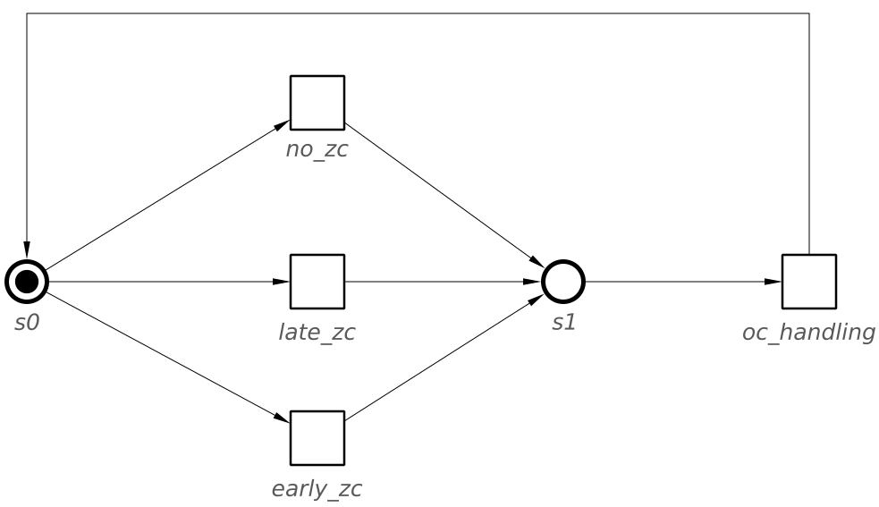
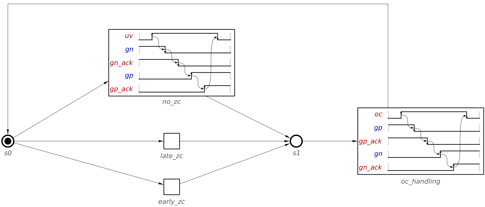
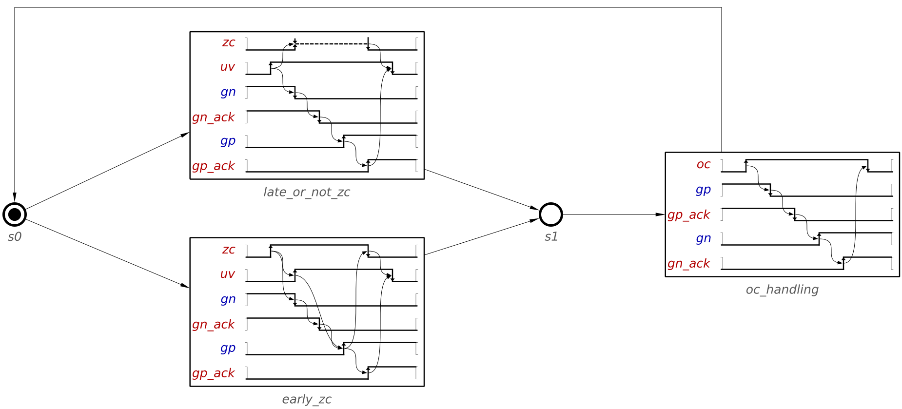

Table of Contents
Design of Waveform Transition Graph for basic buck controller
In this tutorial we are going to learn how to design a Waveform Transition Graph (WTG) by means of an example: the buck controller. You can find a description of the buck controller in Design of basic buck controller. Check the first section and try to understand its behaviour before continuing.
Modelling
The buck controller presents three distinct scenarios that need to be modeled:
- no ZC – UV happens without ZC;
- late ZC – UV is followed by ZC;
- early ZC – UV happens after ZC.
WTGs use a structured way of modelling different modes or scenarios, by defining a waveform, or set of waveforms, for each scenario. Our first step is then going to be defining the general structure by creating one initial state and three empty waveforms, named after each scenario. Don't forget connecting the initial state to the waveforms, but for now don't add connections from the waveforms.
The resulting WTG is shown in the following figure.

Adding a connection between the waveforms and the initial state would be a correct step. In that design, every scenario would play out and return to the initial state, where it would wait for uv or zc to be triggered. But a careful observation of the behaviour of the buck controller tells us that every scenario has an identical behaviour after uv is triggered for low. We can model this as a different, common scenario, in which signal oc is handled and the PMOS and NMOS transistors are returned to their initial states.
Add a new state and a new waveform, named oc_handling. Connect the previous waveforms to the new state and the new state to the waveform oc_handling. Finally, connect the new waveform to the initial state.
You can see the resulting model in the following figure.

Now that the basic structure is defined, you can model the behaviour of every scenario. Double click on the first scenario, no_zc, and draw its waveform. Remember stopping after the falling edge of uv, since this will be modeled in a different waveform.
The WTG now should look similar to this.

We can complete the remaining scenarios in any order, but lets first work on oc_handling. In the previous waveform, signals had to be created with the default name and then renamed. Now that those signals are in the WTG, we can reuse them by just checking a box in the property editor. Furthermore, since we have already defined the structure of the WTG, the initial state will be automatically set (see Initial state inference).
Check that your WTG looks like the following figure.

You can now work on the remaining scenarios in any order. Thanks to the last step, the initial states will be inferred, and most of the signals, except for zc, can be declared with one click.
The late ZC scenario is very similar to no ZC. The switching of ZC happens concurrently with that of the NMOS and PMOS transistors. Complete this scenario.
The WTG should now look like this.

Finally, only the scenario for early arrival of ZC remains. In this case, ZC arrives before UV and the NMOS transistor has to be switched OFF without waiting for UV. However, switching the PMOS transistor ON is still delayed until UV condition.
The finished WTG should be similar to the following figure.

Simplification
The WTG that you designed is already complete and valid, but WTG models allow simplifying some behaviours. Consider the scenarios no_zc and late_zc. They only differ in the triggers for signal zc. Yet this signal is triggered by an input signals and only triggers another trigger signal. This tells us that zc has no bearing in the output signals that we have to generate. In fact, the only reason we even have these two different scenarios is because the resulting circuit should expect zc to rise and fall… and ignore it. WTG allows us to explicitly model that a certain signal should be ignored between specific input transitions.
Rename the waveform late_zc into late_or_not_zc and edit it. Click on the raise transition for zc and set the direction to unstable. This specifies that zc might be triggered zero or more times and it should be ignored. The last transition of zc, and the connection to uv, guarantees that zc will be set at low before the falling transition of uv. With this change, late_or_not_zc already models the behaviour of no_zc, so delete the waveform no_zc.
The final and simplified WTG should be similar to the following figure.

Validation
This section discusses two ways in which you can validate that your design is correct. In particular, verification that the model is correctly formed and simulation to ensure that it works as expected.
Verification
Workcraft includes three verification tools that check different properties of a WTG that should be satisfied by any model. You can access them in the Verification menu.
Input properness
An internal signal cannot trigger an input. This restriction is important when the model we design is going to be implemented as a circuit, because internal signals are not observed by the environment. As such, an input signal cannot react (be triggered) by an internal signal. Note that this restriction cannot be violated in this example, since no internal signals are used.
Nonetheless, this restriction can be violated in WTGs in two ways:
- A connection between a transition of an internal signal and a transition of an input signal.
- When there is an internal signal transition without any connection to other transitions in a waveform. If this waveform is connected to a state, that at the same time is connected to a waveform in which an input signal can be fired first. In this case, the internal signal is effectively triggering this input.
Reachability
Checks that there are no states, waveforms or transitions that cannot be reached by the initial state. The existence of unreachable elements often indicates a mistake in the design.
Soundness and consistency
Checks that a WTG is consistent and has a sound structure.
Consistency refers to the states of signals having correct values at any point. In WTGs, this is often violated in the initial states of signals. For example, when the initial state of a signal does not match the state at the end of the previous waveform.
Soundness checks ensure that the structure of the WTG is correctly form. It has numerous checks, such as making sure the initial state is defined or that there are no unconnected transitions.
Simulation
You can use the simulation tool ![[M] Simulate](../help/core/editor_tools-simulate.png "[M] Simulate") to ensure the WTG performs as you expect. At any moment, transitions that can be fired are highlighted in orange. Clicking on them will fire them and show the which transitions can be fired afterwards. You can compare the simulation traces to the buck controller specification.
to ensure the WTG performs as you expect. At any moment, transitions that can be fired are highlighted in orange. Clicking on them will fire them and show the which transitions can be fired afterwards. You can compare the simulation traces to the buck controller specification.
Conversion into STG
A correctly formed WTG (one that passes the Soundness checks from the Verification menu) can be converted into an STG. This allows you to perform more advanced verification checks that are available for STGs. More importantly, this also allows you to synthesize the circuit derived from the WTG (see Synthesis of STG).
In order to convert a WTG into a STG, go to the Conversion menu and click Signal Transition Graph. This will prompt a soundness check and, if satisfied, a new window will open with the derived STG.